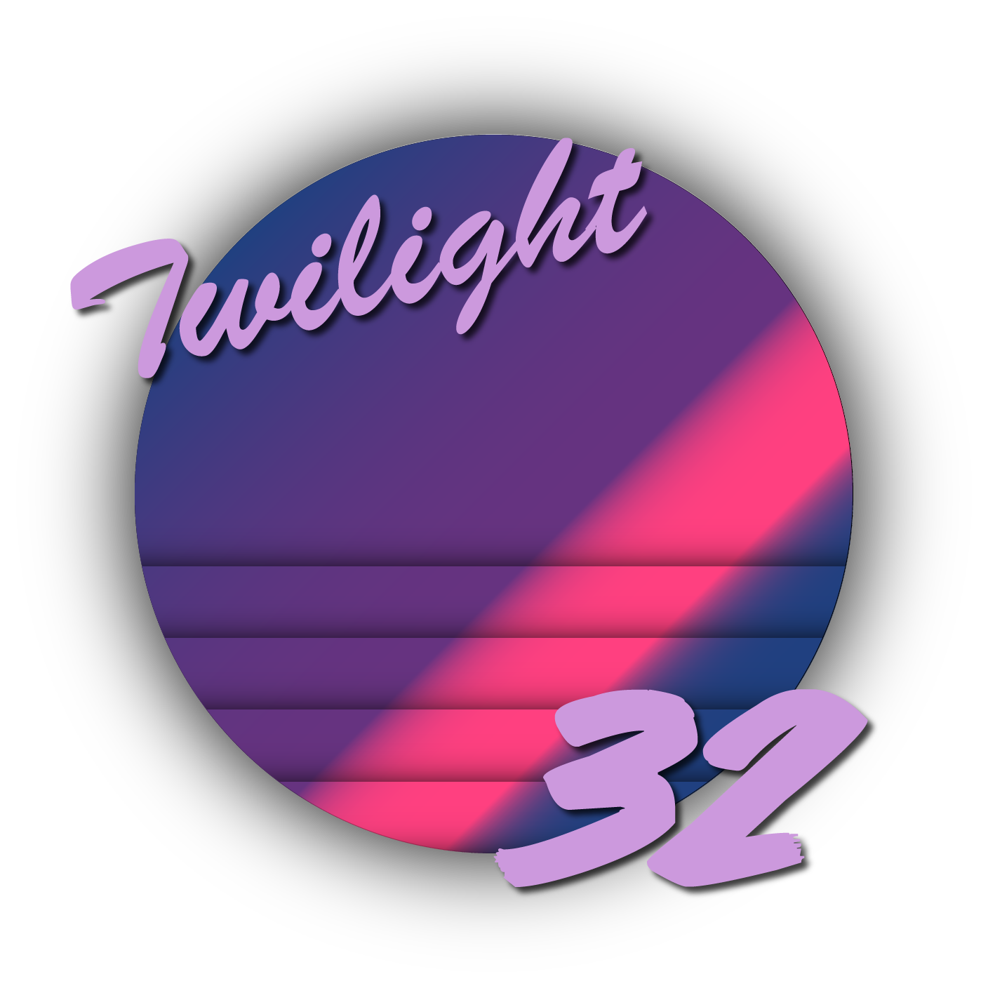

Welcome to Twilight32! Twilight32 is a fun and retro-looking web-based IDE not unlike fantasy consoles such as PICO-8, aimed at retro game enthusiasts who want to develop on a platform similar to old computers from the 80's.
Check us out on GitHub!
Welcome to Twilight32! Twilight32 is a fun and retro-looking web-based IDE not unlike fantasy consoles such as PICO-8, aimed at retro game enthusiasts who want to develop on a platform similar to old computers from the 80's.
Check us out on GitHub!

twilight32 v0.0.1
A fantasy BASIC console and IDE
Copyright 2019
J. P. Savard & contributors
https://github.com/juju2143/twilight32